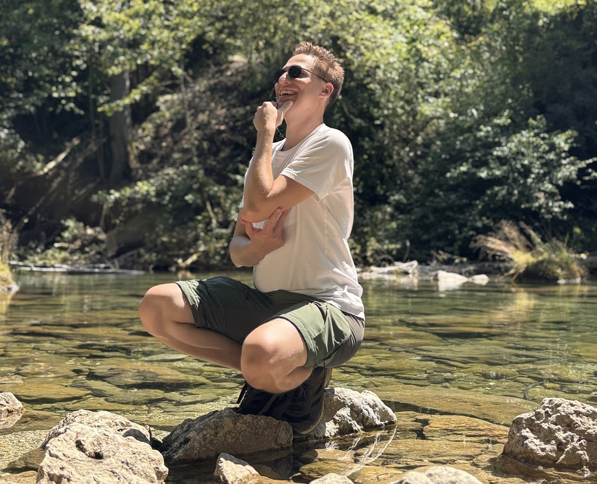

O mnie

Cześć, jestem Patryk. Właśnie kombinuję, jak ulżyć Twoim roślinom przy najbliższej suszy.
Doświadczenie
Jak zapewne zauważyłeś(aś), nie jestem firmą z wielkim portfolio. Nie mam też certyfikatów, które potwierdzałyby moje słowa (jeszcze!). Od kilkunastu lat pracuję jednak jako inżynier elektronik i programista — projektuję kompletne systemy od koncepcji do produkcji. Jestem przyzwyczajony do rozwiązywania trudnych problemów, wyciągania wniosków z niepełnych danych i korygowania strategii, gdy coś nie wychodzi. To mój chleb powszedni. Jak zapewne dobrze wiesz, praca w ogrodzie wymaga podobnych umiejętności.
Staram się jednak wyciągać maksimum z tego, czym dysponuję — ciemny, oszklony balkon w bloku w centrum miasta przekształciłem w funkcjonujący mini-ogród. Zbudowałem własny system zbierania deszczówki nieingerujący w instalację budynku. Wykonałem autorski, automatyczny system podlewania, który jednocześnie pozwala mi śledzić warunki uprawowe. Glebę użyźniam kompostem wykonanym samodzielnie z kuchennych odpadków przefermentowanych mikroorganizmami bokashi.
Pomimo zaledwie kilku godzin pełnego słońca dziennie w sezonie i letnich temperatur sięgających niemal 50 stopni, mój balkonowy projekt może poszczycić się realnymi osiągnięciami. Sezon ogórkowy zamykam dopiero zimą (z licznikiem ponad 100 pysznych ogórków na roślinę), a truskawki i sałatę z poprzedniego sezonu zbieram jeszcze wczesną wiosną. To niewielka skala — ale konkretne, powtarzalne wyniki w takich warunkach mówią same za siebie.
Etos
Od lat fascynuje mnie tematyka wykorzystywania naturalnych procesów, by uprościć sobie życie w ogrodzie. Śledzę poczynania ludzi z całego świata, którzy niezależnie od lokalnych warunków tworzą piękne, bujne i zdrowe przestrzenie. Ogrody te spełniają różne funkcje: od estetycznych, przez jadalne i użytkowe, po ekologiczne. Wspólnym mianownikiem jest jednak to, że ich właściciele współpracują z naturą, zamiast z nią walczyć. Mądrze projektując swoje systemy, osiągają własne cele — jednocześnie oszczędzając sobie pracy i pieniędzy w dłuższej perspektywie.
Jestem zwolennikiem rozwiązań prostych, konkretnych i łatwych w utrzymaniu. Moją misją jest nie tylko ułatwienie Tobie i Twoim roślinom życia, ale równocześnie poprawa bioróżnorodności w okolicy. Wierzę, że w dobie zmieniającego się klimatu odpowiednie spojrzenie na ten aspekt (wliczając zarządzanie wodą opadową) zaczyna być koniecznością, a nie zachcianką. Im wcześniej to zauważymy, tym łatwiej będzie nam przystosować się do nowych warunków.
Brzmi jak ktoś, z kim chciałbyś współpracować? Odezwij się — umówimy się na rozmowę.